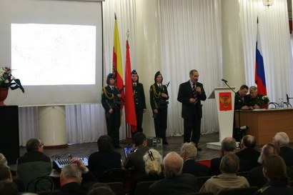
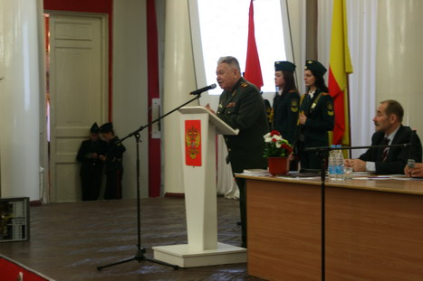
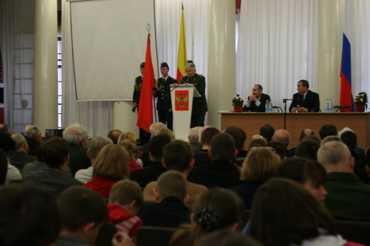

| 16 декабря - день освобождения г. Калинина (г. Твери) от немецко - фашистских захватчиков.
В результате активных действий советских войск 68 лет назад был освобожден первый областной центр и стратегически важный транспортный узел.
В ходе ожесточённых боёв с 13 по 16 октября 1941 года в нашем городе были блокированы две танковые и одна моторизованная дивизии. В последующие дни бронетанковые соединения врага вынуждены были вести несвойственные для них оборонительные действия в городе. В районе Калинина разгромом двух бронетанковых соединений (1-й танковой дивизии и 900-й моторизованной бригады) впервые был развеян миф о непобедимости танковых групп противника.

Два месяца непрерывных контрударов и ожесточенных боёв на окраинах города и в непосредственной близости от него сковали 16 дивизий противника, не позволили 9-й полевой армии и 3-й танковой группе решить поставленные оперативно-стратегические задачи.
Активными контрударами войска Калининского фронта сорвали осуществление «глубокого охвата Москвы с севера», не допустили выхода немецких бронетанковых соединений в тыл войскам Северо-Западного фронта. Поставленная Калининскому фронту задача - «ликвидировать во взаимодействии с Западным и Северо-Западным фронтами попытки обойти Москву с севера» - была успешно выполнена, а немецкие войска своих задач не выполнили. Наступательной операцией Калининского фронта было положено успешное начало разгрома фашистских войск под Москвой.
За боевые заслуги в октябрьских сражениях в районе г. Калинин, две стрелковые дивизии были представлены и получили звание гвардейских. Указанный факт является официальным признанием профессионализма, стойкости и мужества солдат и офицеров 119-й (17-й гвардейской) и 133-й (18-й гвардейской) стрелковых дивизий.

За мужество и героизм, проявленные в сражениях за г. Калинин, к званию Герой Советского Союза были представлены четыре человека: командир 515-го стрелкового полка 134-й стрелковой дивизии майор Аксёнов Даниил Афанасьевич; командир дивизиона 349 лёгкого артиллерийского полка 119-й стрелковой дивизии капитан Селиверстов Иван Александрович; командир стрелковой роты 174-й стрелковой дивизии лейтенант Ковалевнич Герасим Семёнович; командир взвода 634 стрелкового полка 119-й стрелковой дивизии лейтенант Лотов Александр Никитович.
Орденом Ленина были награждены 24 солдата и офицера; орденом «Красное Знамя» - 144 человека; орденом «Красная Звезда» - 183 человека. Всего за октябрьские сражения были награждены орденами 430 человек. В том числе: 22-я армия -145 человек; 29-я армия - 106, 30-я армия - 123, 31-я армия - 56 человек.

Документально подтверждаемые факты ожесточенных сражений, мужества и героизма советских людей (солдат и офицеров Красной Армии, партизан, подпольщиков, рабочих и служащих ополчения) при защите и освобождении города, являются необходимым и достаточным основанием для присвоения г. Тверь (г. Калинин) почетного звания Российской Федерации «Город воинской славы».
11 декабря в Твери прошла общественно-культурная конференция «Земля воинской славы», посвященная 65-летию освобождения Калининской области, 68-й годовщине освобождения г. Калинина, 65-летию Победы над фашистской Германией. Конференция проводилась с целью формирования объективного представления об уникальности истории военных действий на территории Калининской области в период с 4 июля 1941 г. по 19 июля 1944 г. Один из докладов, сделанных на конференции «Воинская слава калининских соединений и объединений» был подготовлен при активном участии отв. секретаря Фонда «Жить и Помнить» А.М.Терентьева. |